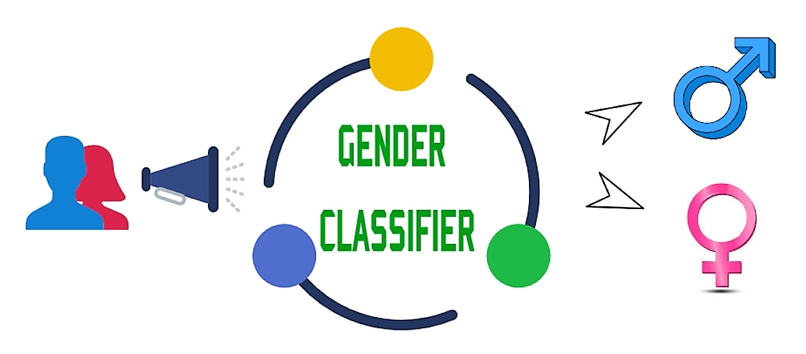

P.Sai Krupal Reddy, Roll No: 150102049, Branch: ECE
;
N.Sanjay, Roll No: 150102038, Branch: ECE
;
M.Harshith, Roll No: 150102034, Branch: ECE
;
M.V.S.Surya Teja, Roll No: 150102033, Branch: ECE
;
Abstract
The primary aim of our project is to build Gender classification system based on the speech.The system includes feature extractor which extracts
MFCC(Mel Frequency Cepstral Coefficients) and we also extract delta coefficients,delta-delta coefficients from MFCC and generate a feature vector.Then we do spherical
k-means clustering and then we implement bag of words and then predict the gender.
1. Introduction
Speech is the most natural and efficient way of communication between humans.This project aims at classifying the gender from speech.The first step is to extract
feature from the audio data.One of the best features that are available with respect to the frequency of identifying gender is
MFCC (Mel Frequency Cepstral Coefficients).It is a non-parametric frequency domain approach, which is based on a human
auditory perception system.
1.1 Introduction to Problem
Human listeners are capable of extracting information from the accoustic signal beyond just the linguistic message like speakers personality, emotional state, gender
e.t.c..Our project aims at enabling the computer to classify the gender.
1.2 Figure

1.3 Literature Review
Gender Recognition of a speaker has various
potential applications. In Sparse Estimation Technique,the extracted fundamental frequency is used for finding auto correlation function of speech signal for identifying
the gender. The reported gender recognition accuracy is 90
to 95%. But the fundamental frequency estimation
may be difficult in case of noisy environment. In this
situation more complex methods can be proposed to
improve fundamental frequency estimation. In Mel Frequency CepstralCoefficients (MFCC), features are extracted for voiced
vowels where the distinction of male/female is most
significant & accuracy is better. This technique does not
propose the method for extraction of segments
corresponding to selected vowels from the continuous
speech audio stream. In Two Stage Classification Method, frequency is estimated for gender recognition. The
accuracy is increased. The achieved accuracy is low. If the
estimated frequency is far from the zone then male and
female frequencies are overlapped. Therefore it is difficult
to identification. In Lab VIEW technique, identification
of the gender and removing gender specific components,
higher compression rate can be achieved. Here the
information is enhanced to save the Bandwidth. This
method does not extract the vowels from speech. The value
is obtained for formant1 were not completely correct as
they were obtained by processing all the samples of speech.
Hence it is difficult to identify the gender. Linear Predictive
Coding (LPC) method used for Feature extraction. A
well chosen feature can result in quality recognition. PDA
based on average magnitude difference function has
relatively low computational cost and it is easy to
implement. In which wrongly chosen feature can result in
poor recognition. By the use of Machine Language
algorithm (MLP), 92.5% accuracy will be achieved. But
it is difficult to detection of females as compared to males.
Seven different methods are combined for Automatic
gender and speaker recognition. Three baseline subsystems
Gaussian Mixture Model (GMM), Mel Frequency Cepstral
Coefficients (MFCC), Support Vector Machine (SVM) and
four subsystems SVM based on UBM weight posterior
probability super vector, sparse representation based on
UBM weight posterior probability super vector, SVM
based on GMM Maximum Likely hood Linear
Regression(MLLR), SVM based on the polynomial
expansion of the coefficients. It is suitable for large scale
online adaptive learning due to its property of no new
training effort required. But the performance is low. To
increase the performance, weighted summation based
fusion of these seven subsystems at the score level is
demonstrated. The result obtained is 3.1% and 3.8% which
is the absolute improvement. Gaussian Mixture model
helps to extract higher level information from the speech
signal. This method is a simple and effective. The
disadvantage of this technique is the higher levels of
information will not provide good performance and may
need to be fused with more traditional acoustic-based
systems.
1.4 Proposed Approach
Describe your approach briefly here.
1.5 Report Organization
Write something here.
2. Proposed Approach
The Proposed approach for this Project is first to extract the MFCCs(mel frequency cepstral coefficients) and next we have to compute the Delta coefficients,Delta-Delta coefficients from the MFCCs.Now we make a feature vector comprising of all the above coefficients and now we fed it to the Sperical K-means clusturing algorithem.We also computed bagofwords which is computed by using training datasets of male and female by clusturing them.
3. Experiments & Results
3.1 Dataset Description
We have taken a DATASET which contains a test dataset and a training dataset with both male and female speech samples.The test and training datasets contains 590
voice samples each of each gender.
3.2 Discussion
Write something here.
4. Conclusions
4.1 Summary
Write something here.
4.2 Future Extensions
Firstly, we want to decrease the error probability.Then we want to increase the predicatability even in the presence of noise.